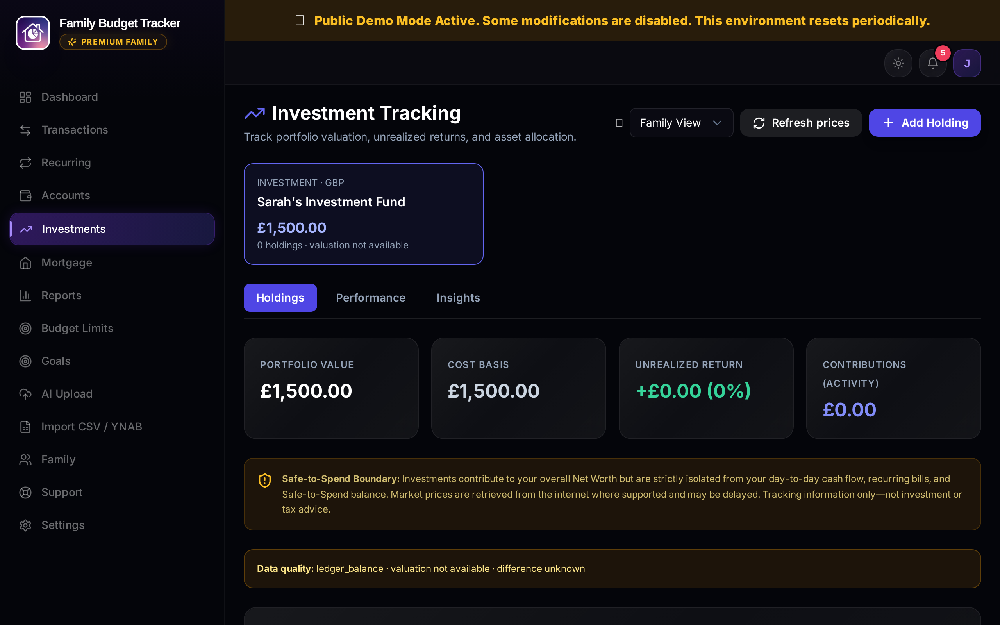
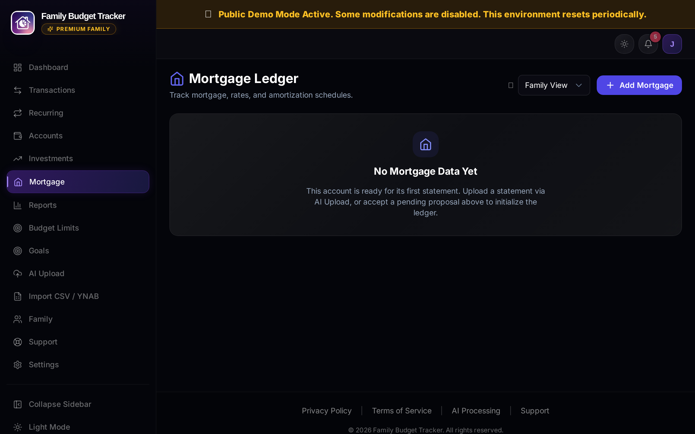
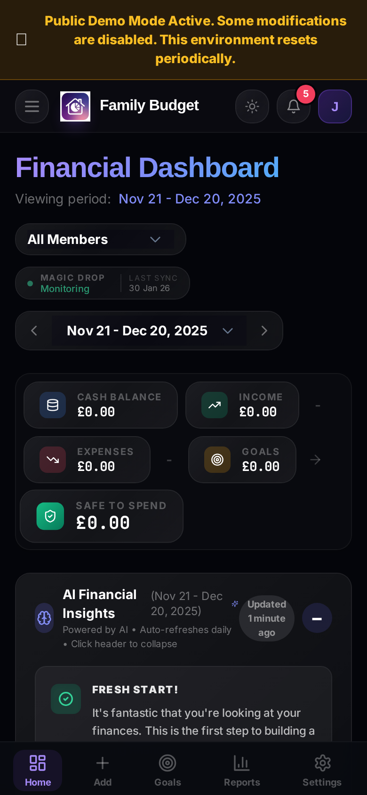
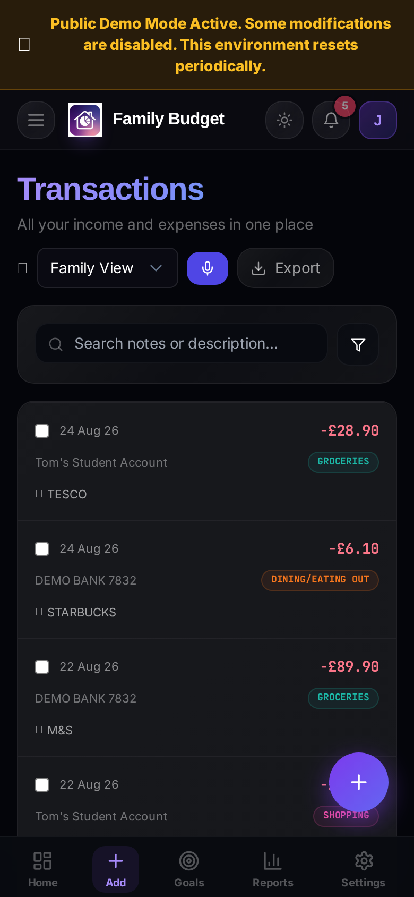
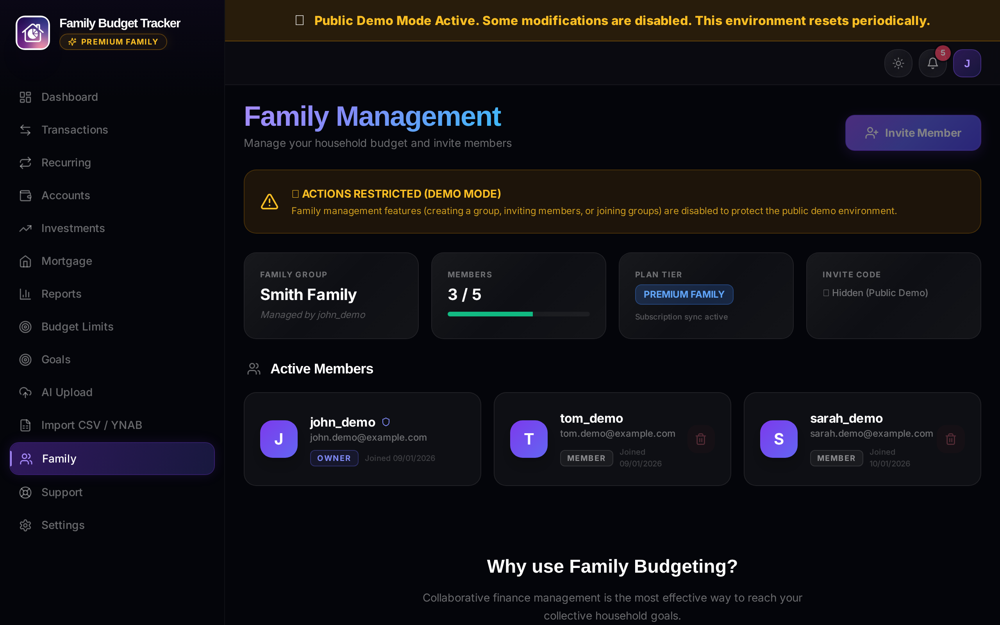

📖 Complete User Manual
Detailed documentation for all features across the Modern React Web App and the Native Android Mobile App.
1. Dashboard & "Safe to Spend" Live Math
Your central command hub displays real-time cash flow, actionable AI insights, and pinned savings goals for the active pay cycle.

The main dashboard showing Safe to Spend, AI insights, and pinned goals.
1.1 Understanding "Safe to Spend"
Traditional apps only display account balances, leading to accidental overspending when future bills or savings are forgotten. Safe to Spend calculates the exact discretionary money you can spend today without running short before your next payday:
Safe to Spend = Total Income − Total Expenses − Physical Goals − Virtual Goals − Scheduled Bills
1.2 The Live Math Breakdown
Click on the "Live Math" button on the Safe to Spend card to open an interactive modal explaining every component of your calculation:
- Income Received: All salary, deposits, and income credited during this pay cycle.
- Discretionary Expenses: Total debit transactions excluding internal transfers and refunds.
- Physical Goals Funded: Money transferred to external savings/brokerage accounts.
- Virtual Goals Allocated: Mental envelope reserves earmarked inside your checking account.
- Upcoming Recurring Bills: Scheduled bills due before your pay cycle resets.
1.3 Daily AI Financial Coach Insights
Premium subscribers receive automated AI insights refreshed every 24 hours. The coach identifies unusual merchant spikes, suggests savings opportunities, and alerts you to budget pace trends.
1.4 Family Member Filter
Toggle between "All Family" (combined household cash flow) or select any individual member to inspect their personal spending and account breakdown.
2. Notifications Center
Stay informed with non-intrusive, functional alerts available across both Web and Mobile.

Notification log with audit trail and direct action links.
2.1 Trigger Events
- Budget Limit Warnings: Alerts triggered when you hit 90% or exceed 100% of a category monthly limit.
- Recurring Bills Processed: Daily confirmation when a scheduled bill or subscription is logged.
- Goal Allocations: Confirmation when automatic savings goal deductions occur.
- Family Membership: Notifications when invited members accept or leave family groups.
- Mobile App Updates: Alerts when new native Android APK releases are available for direct upgrade.
3. Accounts Management
Track checking accounts, credit cards, savings, ISAs, pensions, and mortgages in any global currency.
3.1 Account Classifications
- Budgeting Accounts: Checking and Credit Card accounts that directly affect daily cash flow and Safe to Spend.
- Non-Budgeting Accounts: Savings, Investment portfolios, Pensions, and Mortgages. These represent long-term assets or debts and do not reduce daily spendable cash.
3.2 Initial Balance Precision Rule
- Bank / Savings: Enter positive numbers (e.g.
£3,500.00). - Credit Cards: Enter negative numbers for owed debt (e.g.
-£850.00).
4. Transactions, Voice Commands & Global Cache
Complete ledger management with search, filters, CSV export, and voice transaction logging.

Full transaction ledger with search, category filtering, and CSV export.
4.1 Adding Transactions
- Expense / Income: Log standard cash-in / cash-out transactions.
- Internal Transfer: Moving money between your own accounts (e.g. Checking to Savings) creates linked transactions that never distort expense totals.
4.2 Smart Global Cache & User Bulk Overrides
Our intelligent categorization system recognizes millions of global merchants instantly:
- Global Cache: Standard merchants (e.g. "Tesco", "Uber", "Amazon") are auto-categorized with zero latency.
- Bulk Overrides: When editing a transaction, check "Update all future transactions". The system saves a personal override that permanently takes precedence over the global cache for that merchant.
4.3 Voice Commands (Web & Mobile)
Tap the microphone icon to log transactions or filter your ledger with natural voice commands:
- "Spent £14.50 on lunch at Pret" → Creates an expense under Dining Out.
- "Show all groceries from last week" → Filters ledger dynamically.
5. AI Statement Upload & Multi-Account Splitting
Google Gemini Vision OCR extracts transactions from PDF or image statements with 95%+ accuracy.

5.1 Multi-Account PDF Auto-Splitting
Many banks (such as Barclays, SBI, HDFC) combine multiple accounts (e.g. Current Account + ISA / PPF) in a single monthly PDF. Our AI automatically detects multiple account identities, splits the statement into separate processing streams, and routes each account's transactions to the appropriate ledger.
5.2 Mathematical Reconciliation Check
Every upload is verified against the bank statement's official Opening and Closing summary balances:
Opening Balance + Total Credits − Total Debits = Closing Balance- A 100% Reconciliation Badge guarantees zero missing or duplicated transactions.
6. Magic Drop & Gmail Automation
Enable invisible, hands-free statement ingestion without opening the app.

See our full Magic Drop & Gmail Guide for step-by-step setup instructions for Google Drive and Gmail time-driven triggers.
7. Spending Trends (5+1 Pay Cycle Logic)
Understand your long-term financial trajectory across multiple pay cycles.
7.1 The 5+1 Comparative View
The Trends engine plots your last 5 completed pay cycles alongside your active cycle. This allows you to spot whether your current pace is above or below your historical benchmark.
- Wealth Gap: Plots net surplus (Income − Expenses) over time.
- Safety Net: Tracks cumulative emergency fund and liquid savings reserves.
8. Category Budget Limits
Set spending caps per category to keep your budget under control.

9. Savings Goals (Physical vs. Virtual)
Set targets for holidays, emergency funds, home renovations, and major purchases.

9.1 Physical Goals vs Virtual Goals
| Feature | Physical Goal | Virtual Goal (Envelope) |
|---|---|---|
| Where Money Lives | Dedicated savings / investment account | Stays inside your checking account |
| How to Fund | Make bank transfer & click "Log Transfer" | Click "Quick Fund" (instant mental allocation) |
| Safe to Spend Effect | Deducted as an external transfer | Deducted from available cash buffer |
9.2 Automatic Matching Note Syntax
When logging transfers manually, the system matches transactions to goals using the note field:
- Physical Goal:
Transfer for [Goal Name](e.g.Transfer for Emergency Fund) - Virtual Goal:
Allocation to [Goal Name](e.g.Allocation to Holiday Fund)
10. Smart Investments & Portfolio Analytics
Consolidate your Stocks & Shares ISAs, Pensions, and brokerage accounts.

10.1 Key Capabilities
- Statement Snapshot Truth: Upload investment valuation statements for 100% verified historical snapshots.
- Asset Allocation: Visual breakdown by Geography (US, UK, Emerging Markets, Global) and Sector (Tech, Healthcare, Financials, etc.).
- Pension Performance: Return calculated accurately from net contributions vs current valuation.
- Live Market Pricing: Auto-updates listed holdings with 3-hour cached market prices.
11. Smart Mortgages & Rate Solver
Track your property equity, Loan-to-Value (LTV), and amortized payment schedules.

11.1 Features & Rate Solver
- Payment Linking: Automatically links mortgage debits ($\ge £100$) from your checking account. Repayments remain normal expenses without distorting Safe to Spend.
- Binary Search Rate Solver: If payment amounts adjust (e.g. lender rate changes), the system reverse-engineers the exact new annual interest rate from
(Current Balance, Remaining Term, Monthly Payment)and updates your amortization schedule. - Future Deal Comparisons: Models projected balances and compares official market deals (e.g. Barclays, HSBC) at the end of your fixed rate period.
12. Android Mobile App
The companion app for instant on-the-go financial tracking.


Learn how to enable Biometrics and Bank Push Capture on our Mobile App Guide.
13. Reports & Analytics
Analyze income vs expenses, category breakdowns, savings rates, and transaction histories across customized date ranges with instant CSV export.
14. Family Sharing & Collaboration
Collaborate with up to 5 family members on a single plan.

- Financial Transparency: All members share visibility of household accounts and goals.
- Individual Filter: View personal spending vs total family cash flow with a single click.
- Secure Invitations: Invite via direct email link or a 6-character join code.
15. Security & Statement Password Vault
Manage encrypted passwords for password-protected bank statements.
- AES-256 Encryption: Statement passwords stored in the Vault are encrypted at rest using industry-standard AES-256.
- In-Memory Decryption: Keys are decrypted only for the millisecond duration of PDF parsing and are never stored in plain text.
- Zero Bank Credential Access: We never ask for or store your online banking credentials.
Have Questions?
Check our FAQ or email support@getdigraw.com.